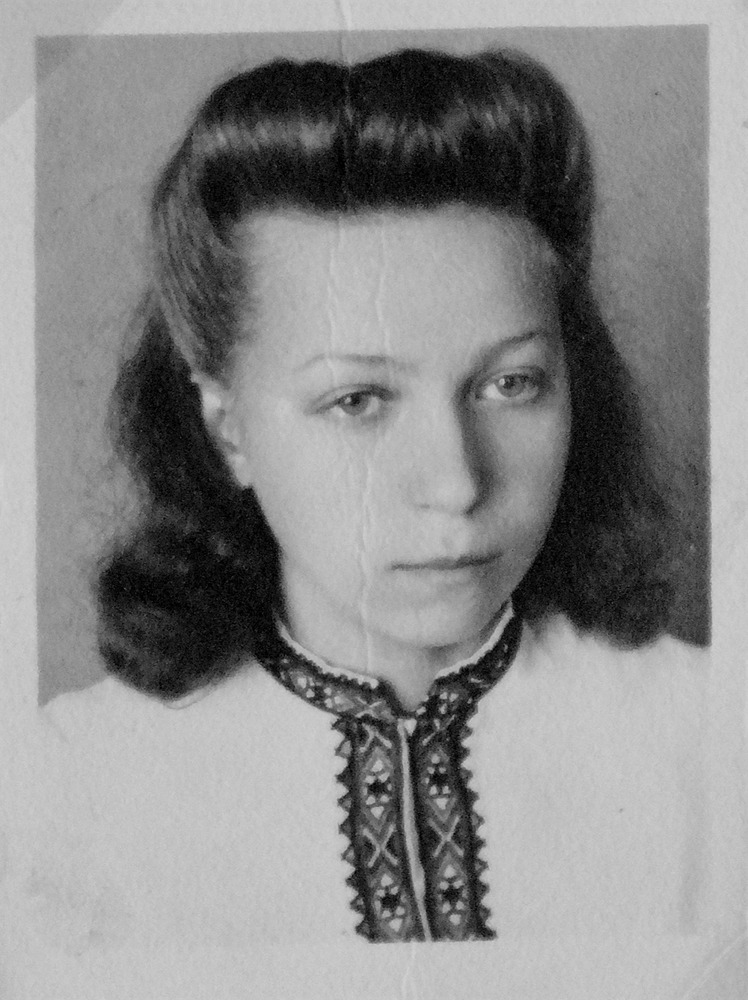

Danny Bacchus
Danny is a digital artist specialising in interactive, experiential arts and motion design. He is a Principal Lecturer at Sheffield Hallam University UK, where he leads a portfolio of courses in Digital Media Production and Immersive Arts. He is currently concluding a practice-based PhD which investigates notions of 'presence' in immersive digitial environments, creating virtual reality artworks that explore where embodied relationships with virtual worlds may generate spaces of affective resonance with the experiences of another.
Danny is the lead artist on the two VR works, 'I Look For Them' and 'Be That Ocean' that feature in the 'A Thousand Voices' exhibition.

Dominic Green
Information about Dom here...
Marcel Schreur
Information about Marcel here...